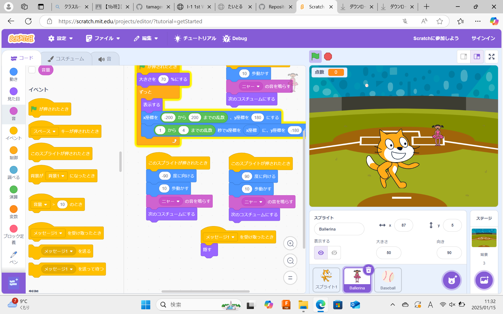

1週目のレポート ： 公大高専１年実習I-1
1b班32番 福嶋 颯
第1週目
1-1 サイエンスアート
1.内容
スクラッチを使って線を描くプログラムを行った。まず、ペンを下ろすブロックを使い、猫が動くときに線をかけるようにした。次に、前に進むブロックで猫が前進するようにする。 右に10度回すブロックを使って、猫が右回りで進んでいくようになる。最後に円の大きさを変えるために、繰り返しブロックを使って、猫が動きを続けることで繰り返し円を描き続けるプログラムが完成する。
2.感想
体験学習の時にやっていたので、やることはわかっていましたが、体験学習の時よりも自分で作ってみることが多く、より新しいことが出来て自分のプログラミングに対する力がついたと思います。
1-2 ゲーム

1.内容
リンゴが落ちてきて、キャッチすると点数が引かれたり、増えたりするプログラムを作った。まず旗が押されると、x＝−120 y＝−90位置するようにした。そのあとに、スプライトに触れると、動く、音が鳴る、コスチュームを変える動作を行った。 その後、背景と反転の設定をする。結果、リンゴが落ちてき、キャッチすると点数が増えたり、減ったりするようになる。
2.感想
これも体験学習で行っていましたが、体験学習に比べ、新しものを自分で作ることが出来たので、とても楽しかったです。 それに、複雑なブロックなども多かったけれど、自分で工夫して作ったゲームが完成した時の達成感も嬉しかったです。
1-3 ホームページ作成
私のホームページ
1.内容
まずGithubでアカウントを作成した。作成したアカウントでログインをした。ログインした自分のアカウントで、手順に沿いながら自身のホームページを作成した。 Setting→Pages→visit siteで自分の書いたホームページが出てきて完成。
2.感想
最初の方は英語ばかりでなにをしているかわからなかったけれど、レポートの提出や書き込み、画像のアップロードなどこのGithubによってスムーズに行えてることが分かり、とてもすごいなと思いました。
各ページへのリンク
1週目のレポート
2週目のレポート
3週目のレポート
私のホームページ